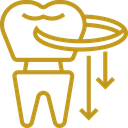
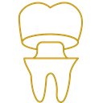
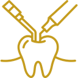

Próteses
Conforto e naturalidade no dia a dia. Próteses personalizadas para recuperar função e estética de forma discreta.
Soluções restauradoras planejadas para quem busca conforto ao mastigar e aparência natural, com atendimento atencioso.
Sem compromisso:
tire suas dúvidas
Cuide da sua saúde bucal e ainda tenha vantagens exclusivas

Conforto e naturalidade no dia a dia. Próteses personalizadas para recuperar função e estética de forma discreta.

Refaça a forma e a resistência do dente com acabamento natural, pensado para a sua rotina.

Restaurações precisas e estéticas que integram cor e forma ao seu sorriso.
Serve de base firme e permanente para apoiar uma prótese ou coroa (o dente artificial), devolvendo a mastigação, a estética e a fala com aparência e função idênticas às de um dente natural.
Saiba o que me faz um diferencial em tratamento odontológico
Planejamento claro e explicação simples
Estética natural e foco em durabilidade
Cronograma objetivo por etapas
Atendimento atencioso e pontual
Veja o que acontece em cada etapa, da avaliação aos cuidados depois do tratamento
Conversa sobre o que incomoda você e exame completo do seu caso.
Você recebe as opções de tratamento, as etapas e os prazos explicados de forma simples.
O tratamento segue o cronograma combinado, sem surpresas no caminho.
Você sai sabendo como manter o resultado no dia a dia.
Excelente com base em 16 avaliações no Google
Atendimento maravilhoso, dr.Uriel super atencioso com o paciente. Mesmo tendo plano odontológico, fiz questão de pagar tratamento particular com ele devido a atenção e carinho q ele trata seus pacientes. Muito sucesso👏
Priscilla Cadah
Avaliação no Google
Dr. Uriel refez meu protocolo (prótese fixa). Trabalho rápido e super bem feito. Excelente profissional.
Silvia Helena Moreno
Avaliação no Google
Melhor dentista que já fui ! Super recomendo !!!! Nota 1000!!!!
Luciano Gomes
Avaliação no Google
Atendimento de qualidade, pontualidade e higienização correta...Recomendo
Marla Cabral
Avaliação no Google
excelentes profissionais gentileza e higiene parabéns recomendo
Marta Ribeiro
Avaliação no Google
Atendimento com excelência!!!!
Cláudia Taniguchi
Avaliação no Google
O cronograma é combinado previamente e depende do caso. Explicamos etapas e prazos de forma clara.
Indicamos opções com base em estética, resistência e objetivo do tratamento. Você participa da decisão com informações simples e diretas.
Buscamos integrar cor e forma para um resultado discreto no dia a dia.
A abordagem é planejada para oferecer conforto durante o procedimento. Após a avaliação, explicamos o passo a passo.
A longevidade depende de uso e cuidados. Orientamos sobre manutenção para conservar conforto e aparência.
Clique no botão de WhatsApp, fale com nossa equipe e receba as informações para agendar.
Explique seu caso no WhatsApp e receba orientação sobre as opções para seu sorriso.
Agendar pelo WhatsApp